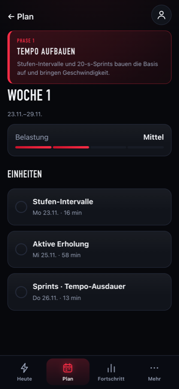
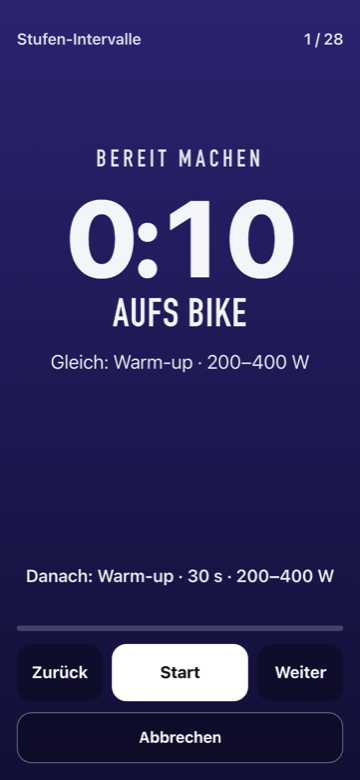

Zusatztraining für Boxer
Mehr Kondition für den Kampf. Drinnen, messbar, geplant.
Nonstop Boxing ist ein Konditionsplan auf dem Air-Bike. Er richtet sich nach deinem Kampftermin und misst, was du wirklich leistest. Er ergänzt dein Boxtraining, er ersetzt es nicht.
Die Web-Version läuft jetzt im Browser, auf dem Handy und am Computer. Die Store-Apps folgen.

Was du davon hast
Vier Vorteile
Du trainierst drinnen
Egal ob Regen, Kälte oder Dunkelheit. Du brauchst keine Laufstrecke und musst nicht bei jedem Wetter nach draußen.
Weniger Belastung für die Gelenke
Das Air-Bike belastet Arme und Beine zusammen und schont die Gelenke in der Regel mehr als Sprints im Laufen.
Du siehst, was du leistest
Die App hält fest, was gelaufen ist: Dauer, Pausen, übersprungene Teile. Deine Zielwerte kommen aus deinem Fitness-Test, und die Anzeige am Bike zeigt dir, ob du sie triffst.
Ein Plan bis zum Kampf
Der Plan zählt zehn Wochen rückwärts vom Kampftermin. Zum Kampf hin werden die Einheiten kampfnäher.
Wichtig: Das ist eine Zusatz-Konditionierung, kein Boxtraining. Technik, Sparring und dein Trainer bleiben das Wichtigste.
Der ehrliche Vergleich
Klassisches Training oder Air-Bike-Plan?
Beides hat Vor- und Nachteile. Der Plan ersetzt das klassische Training nicht, er ergänzt es.
Klassisches Training
Laufen, Sprinten, Sandsack, Sparring
Vorteile
- Technik und Ringgefühl
- Sparring und Kampfnähe
- Kein Gerät nötig
- Gewohnt und vertraut
Nachteile
- Wetter und Dunkelheit
- Laufstrecke oder Platz nötig
- Belastung schwer zu messen
- Sprints im Laufen belasten die Gelenke stärker
Air-Bike-Plan
Zusatz-Konditionierung mit Nonstop Boxing
Vorteile
- Drinnen, unabhängig vom Wetter
- Gelenkschonender als Sprints im Laufen
- Messbar und protokolliert
- Plan und Zielwerte nach deinem Fitness-Test
Nachteile
- Du brauchst ein Air-Bike
- Keine Technik, kein Sparring, kein Ersatz für Boxtraining
- Setzt eine gute Grundfitness voraus
- Leichtere Sportler erreichen hohe Intensität schwerer
So fängst du an
In vier Schritten zur ersten Einheit
- Konto anlegenMit deiner E-Mail-Adresse. Du bekommst einen Code per Mail, ein Passwort brauchst du nicht.
- Kampftermin eintragenDer Plan richtet sich danach. Ohne Termin oder Startdatum zeigt dir die App, was als Nächstes zu tun ist.
- Fitness-Test fahrenEin kurzer Test auf dem Air-Bike. Daraus berechnet die App deine Zielwerte.
- Einheit startenDer Timer führt dich durch Belastung und Pause. Danach siehst du deinen Verlauf im Bereich Fortschritt.



Für Skeptiker
Warum dieser Plan?
Was anders ist als bei Dauerläufen und allgemeinen Bike-Programmen, und was wir nicht behaupten.
Für Trainer und Vereine
Deine Boxer, ein Überblick
Lege deine Boxer an, gib jedem einen Code und sieh, wer trainiert. Mit Testwoche.
Preise
Das erste Training ist kostenlos
Danach Abo oder Training mit Werbung. Vereinspakete ab 39,99 € im Jahr.
Häufige Fragen
Die wichtigsten Antworten
Ersetzt die App mein Boxtraining?
Nein. Sie ist eine Zusatz-Konditionierung. Technik und Sparring machst du weiter mit deinem Trainer.
Brauche ich ein Air-Bike?
Ja. Der Plan ist für das Air-Bike gemacht.
Kostet es etwas?
Das erste Training ist kostenlos. Danach gibt es ein Abo oder das Training mit Werbung. Die Preise stehen auf der Seite Preise.
Ist der Plan für Anfänger geeignet?
Der Plan setzt eine gute Grundfitness voraus. Bei Unsicherheit sprich vorher mit deinem Trainer oder Arzt.